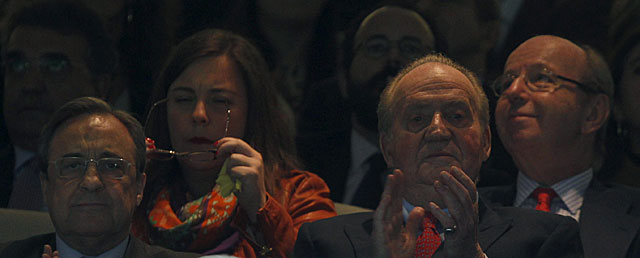

Ana Romero | Actualizado martes 30/04/2013 21:15 horas

El Rey ha reaparecido en un acto público en el estadio Santiago Bernabéu, donde ha presenciado en el palco de autoridades la semifinal de Liga de Campeones entre el Real Madrid y el Borussia de Dortmund. La llegada del monarca a su localidad no ha sido anunciada por megafonía ni ha sonado el himno de España.
Ha sido la primera actividad pública del monarca tras su doble operación de hernia del pasado 3 de marzo. Ya la semana pasada retomó las audiencias en Zarzuela, pero ésta ha sido la primera ocasión en la que ciudadanos y periodistas han podido verle fuera del Palacio de la Zarzuela.
Don Juan Carlos, sonriente, se ha sentado en el centro del palco presidencial del Bernabéu, entre Florentino Pérez y Hans-Joachim Watzke, con quienes ha intercambiado algunas impresiones en tono distendido, informa Europa Press.
El monarca, que sigue apoyándose en dos muletas para caminar, continúa con sus sesiones diarias de rehabilitación, pero se siente más seguro y mantiene el buen estado de ánimo.
En principio, se esperaba su reaparición para el día 17 de mayo en la final de la Copa del Rey entre el Real Madrid y el Atlético de Madrid, pero Don Juan Carlos ha decidido, de manera espontánea esta misma mañana, que iba a acudir por la noche al Bernabéu.
Según fuentes de la Casa del Rey, se ha tratado de una "decisión personal" que ha tomado tras pedir permiso a los médicos debido a su buen estado físico. Desde Zarzuela se quiere restar importancia a esta decisión para que no sea interpretada como un deseo del Rey por reincorporarse con demasiada premura a la vida pública tras la última operación.
En estos días atrás de audiencias, todas las imágenes del Rey han sido tomadas por un cámara y un fotógrafo institucionales. En ellas, Don Juan Carlos aparece más delgado y con mejor aspecto que antes de la operación.
El pasado domingo, el Rey recibió a Abdulá II de Jordania, con el que mantiene una excelente relación. Fue el final de una semana que comenzó con el encuentro con José Manuel Caballero Bonald, Premio Cervantes 2012. Un día después se dejó fotografiar con Robert Vico, el primer ministro de Eslovaquia.